Пробіжки й велозаїзди зі «Здоровʼя»
Кардіо з будь-якого застосунку з’являється з картою маршруту, темпом і пульсовими зонами.
Силові тренування на iPhone та Apple Watch
Записуй підходи за секунди, стеж за кожним рекордом, а тиждень тренувань довір ШІ-тренерові. З Replex прогрес видно на власні очі.
Почати можна безкоштовно. Pro додає ШІ-тренера, власні плани й усю історію.
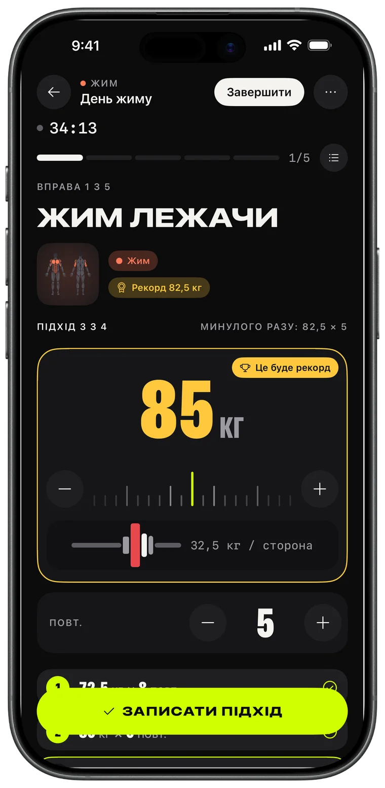
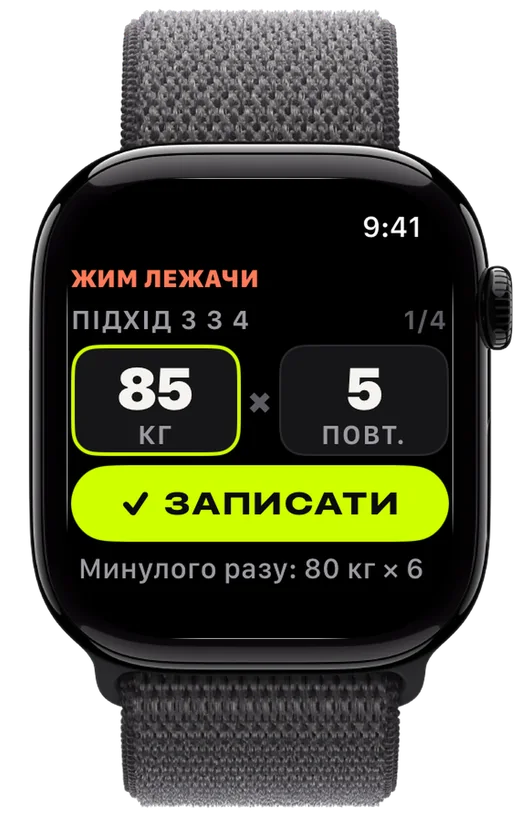
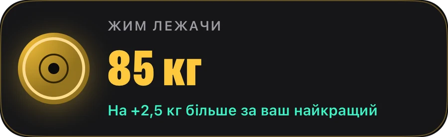
Запис
Набери млинці, запиши підхід, перевершуй минулий раз. Replex пам’ятає, що ти піднімав, і готує наступний підхід раніше за тебе.
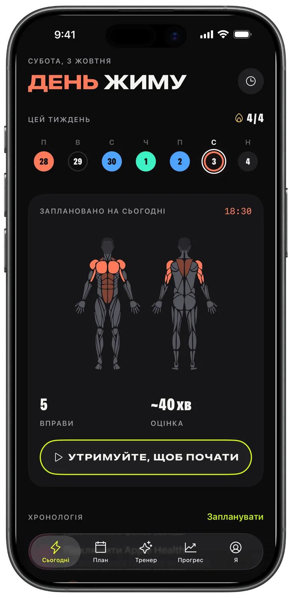
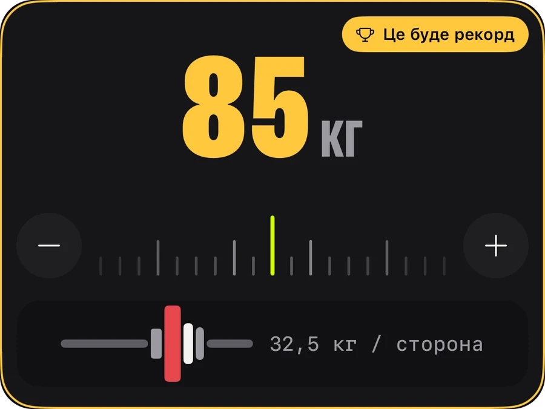
Apple Watch
Залиш телефон у сумці. Покрути коронку, щоб задати вагу й повторення, натисни «Записати» — і iPhone синхронізується миттєво.
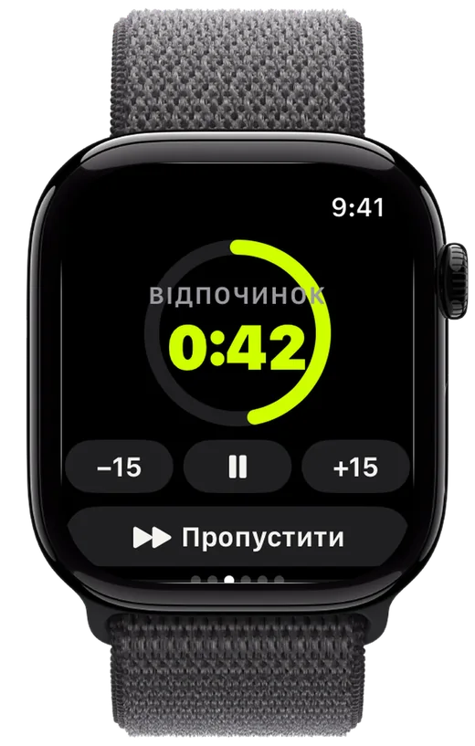
Прогрес
Обсяг, що зростає щотижня, усі твої рекорди й динаміка кожної вправи — і видно, що робота дає результат.
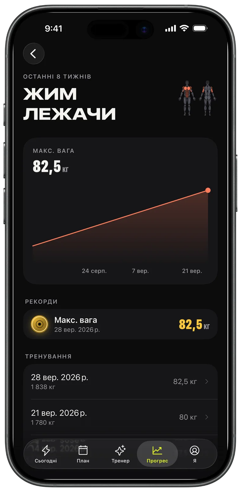
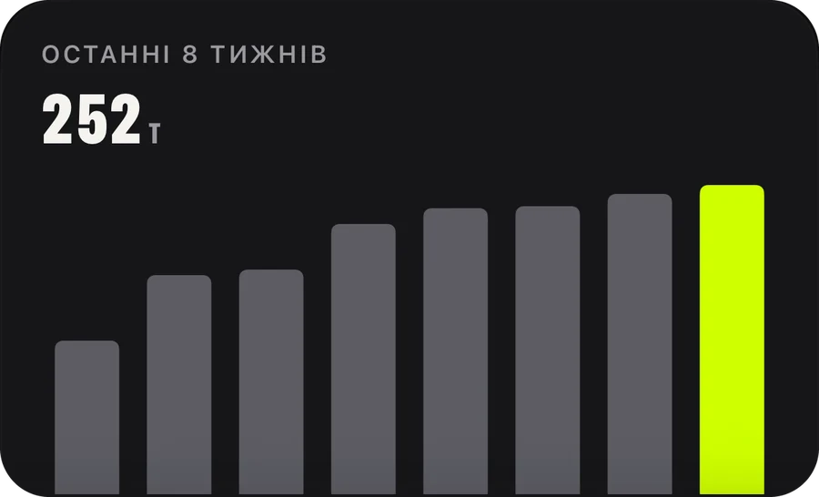
ШІ-тренер · Pro
Попроси тиждень — і він уже в календарі. Тренер бачить твої справжні тренування, рекорди й пробіжки та планує з урахуванням них.
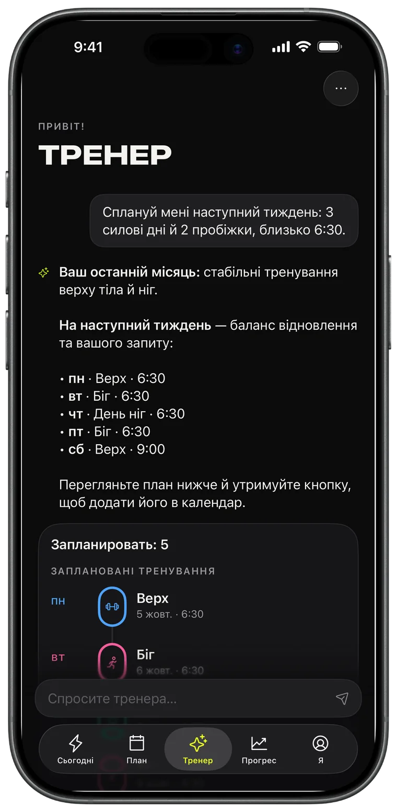
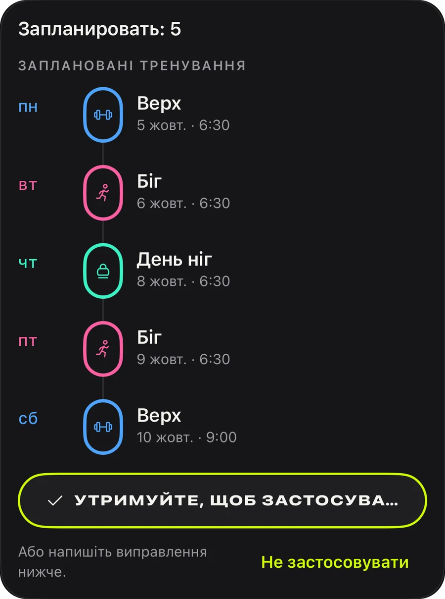
Плани
Жим, тяга, ноги, верх/низ, усе тіло: 44 готові плани, щоб почати вже сьогодні, або створи власний і постав його на повтор.
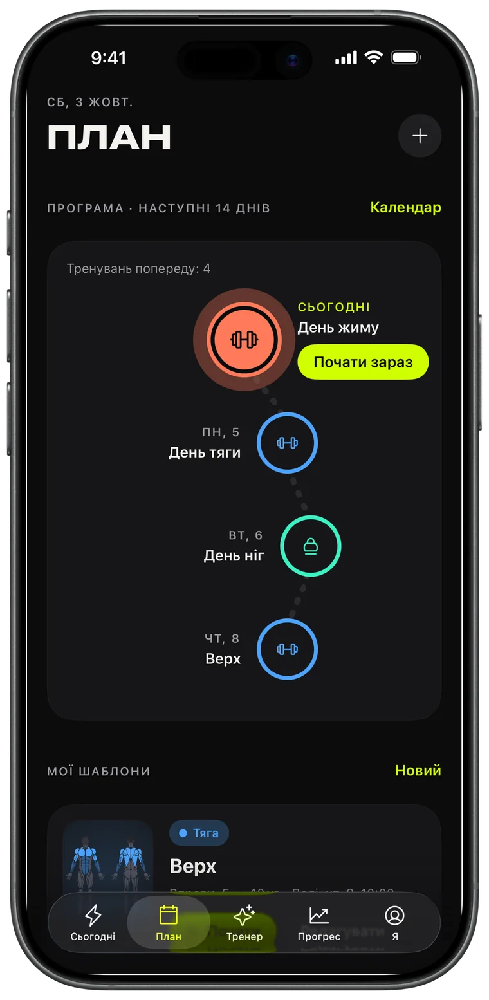
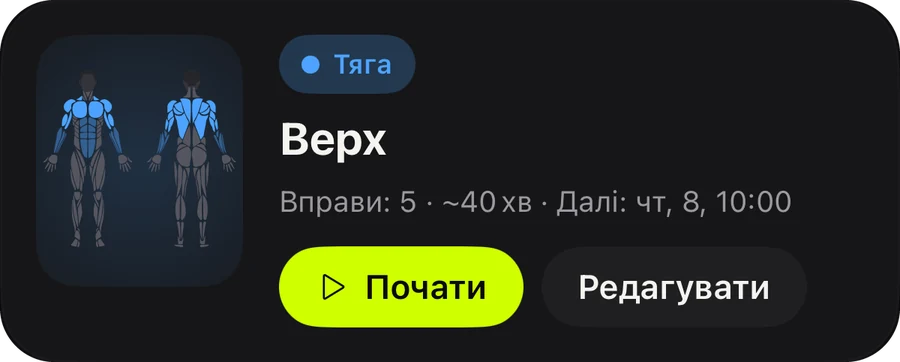
Поширення
Кожне завершене тренування стає карткою для сторіс з обсягом, часом і рекордами. Опублікуй її або збережи як доказ.
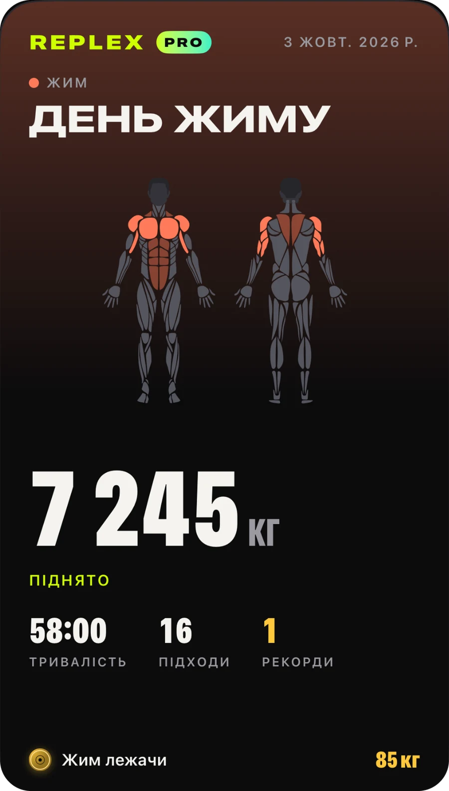
Кардіо з будь-якого застосунку з’являється з картою маршруту, темпом і пульсовими зонами.
Поточний підхід, відпочинок і пульс на замкненому екрані та в Dynamic Island.
Тренування, шаблони й плани на всіх твоїх пристроях — і лише для тебе.
Дивись, що тренуватиме заняття, ще до початку, і що ти вже навантажив цього тижня.
Кілограми, фунти чи стоуни; вправи з власною вагою та на час уже вбудовані.
Світла чи темна тема й три акценти — Volt, синій і рожевий — із відповідними іконками застосунку.
Усе, щоб записувати тренування й прогресувати.
Для тих, хто планує наперед.
Pro доступний у застосунку як місячна чи річна підписка або як одноразова покупка назавжди. Підписку можна скасувати будь-коли в налаштуваннях облікового запису Apple.
Завантаж Replex і запиши перше тренування менш ніж за хвилину.
Ні. Replex повністю працює на iPhone. З Apple Watch можна записувати підходи, запускати таймер відпочинку й стежити за пульсом просто із зап’ястя.
Так. Користуватися Replex можна безкоштовно: запис тренувань, таймер відпочинку, 5 планів із власною вагою, рекорди за останні тренування та 5 тренувань на Apple Watch. Replex Pro — щомісяця, на рік або одноразовою покупкою назавжди — додає ШІ-тренера, усі 44 плани, власні шаблони й розклад, повну історію та необмежені тренування на годиннику.
На твоїх пристроях і в твоєму особистому iCloud. Тренування також можна зберігати у «Здоровʼя». ШІ-тренер бачить лише те, що потрібно для відповіді, і лише тоді, коли ти сам запитуєш.
Кілограми, фунти чи стоуни — підбір млинців працює у вибраних одиницях.
54, зокрема українську, англійську, іспанську, португальську, французьку, німецьку, японську, корейську, китайську, арабську та іврит.